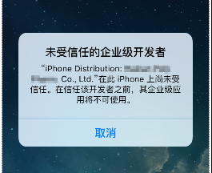
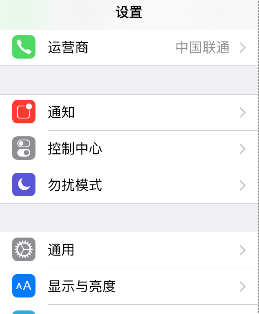
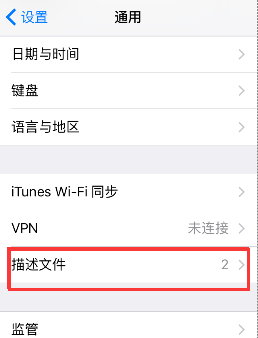
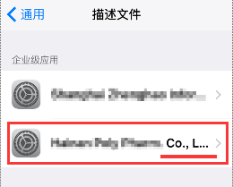
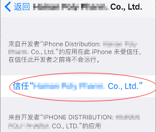
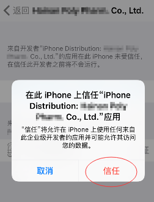

详细图文教程：
1

如果打开下载的「游戏或者应用」，出现如下图提示，记住红线部分的描述文件名
2

然后在设备中点击【设置>>通用>>描述文件】(iOS9上叫“描述文件”, iOS10上叫“设备管理)，，找到刚才同名的描述文件
3



点击文件，选择【信任】，然后就能正常打开APP了
如果打开下载的「游戏或者应用」，出现如下图提示，记住红线部分的描述文件名
然后在设备中点击【设置>>通用>>描述文件】(iOS9上叫“描述文件”, iOS10上叫“设备管理)，，找到刚才同名的描述文件
点击文件，选择【信任】，然后就能正常打开APP了